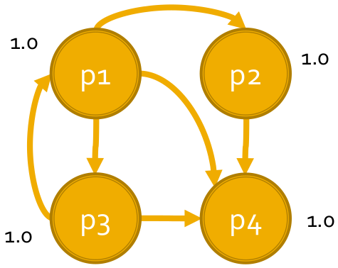
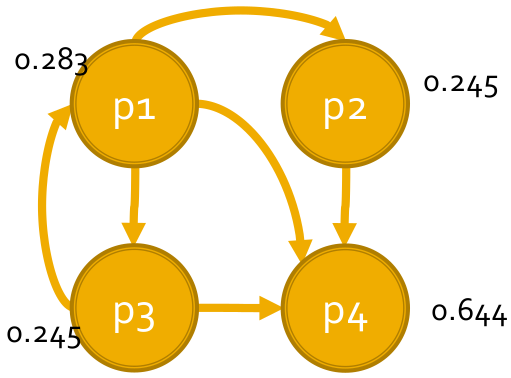
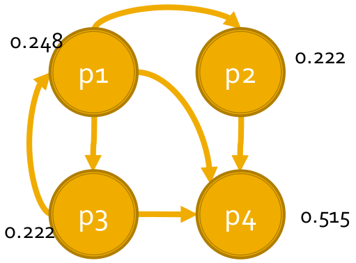
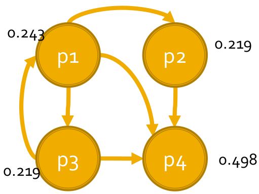

17 Introduction to PageRank
PageRank is the original famous algorithm used by the Google Search engine to rank vertexes (web pages) in a graph by order of importance. For the Google search engine, vertexes are web pages in the World Wide Web, and edges are hyperlinks among web pages: PageRank works by assigning a numerical weighting (importance) to each node.
In other words, it computes a likelihood that a person randomly clicking on links will arrive at any particular web page. So, to have a high PageRank, it is important to have many in-links, and be liked by relevant pages (pages characterized by a high PageRank).
- The vote of each link is proportional to the importance of its source page \(p\);
- If page \(p\) with importance \(\textbf{PageRank}(p)\) has \(n\) out-links, each out-link gets \(\frac{\textbf{PageRank}(p)}{n}\) votes;
- Page \(p\) importance is the sum of the votes on its in-links.
PageRank formulations
Simple recursive formulation
- Initialize each page rank to \(1.0\): for each \(p\) in pages set \(\textbf{PageRank}(p)\) to \(1.0\)
- Iterate for \(max\) iterations
- Page \(p\) sends a contribution \(\frac{\textbf{PageRank}(p)}{\textbf{numOutLinks}(p)}\) to its neighbors (the pages it links);
- Update each page rank \(\textbf{PageRank}(p)\) with the sum of the received contributions.
Random jumps formulation
The PageRank algorithm simulates the “random walk” of a user on the web. Indeed, at each step of the random walk, the random surfer has two options:
with probability \(1-\alpha\), follow a link at random among the ones in the current page;
with probability \(\alpha\), jump to a random page.
Initialize each page rank to \(1.0\): for each \(p\) in pages set \(\textbf{PageRank}(p)\) to \(1.0\)
Iterate for max iterations
- Page \(p\) sends a contribution \(\frac{\textbf{PageRank}(p)}{\textbf{numOutLinks}(p)}\) to its neighbors (the pages it links);
- Update each page rank \(\textbf{PageRank}(p)\) to \(\alpha + (1 - \alpha)\) times the sum of the received contributions.
- \(\alpha=0.15\)
- Initialization: \(\forall{p}, \textbf{PageRank}(p) = 1.0\)






